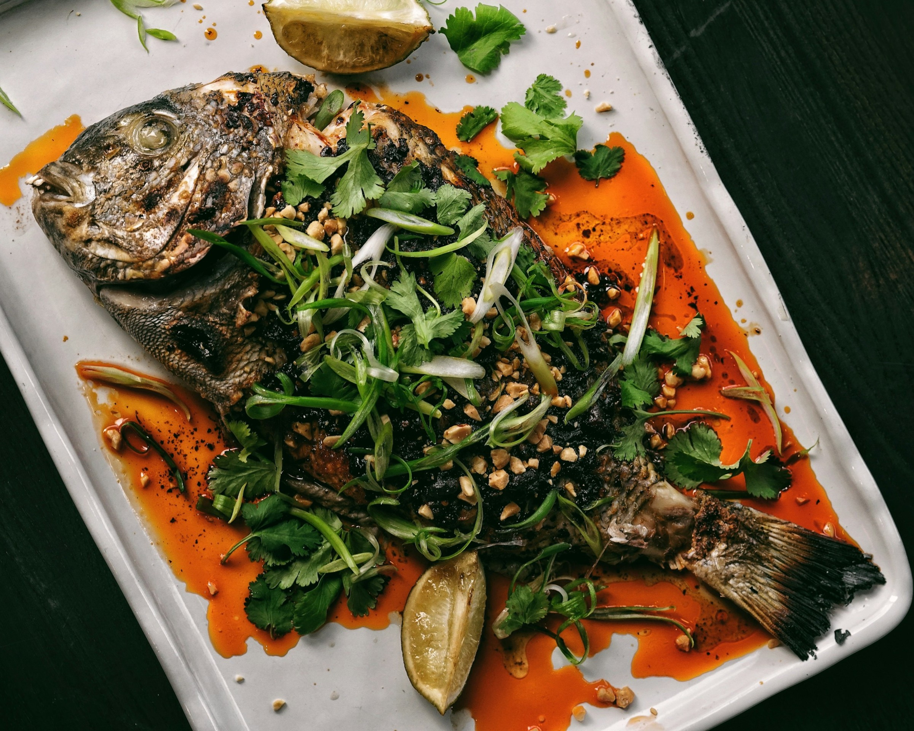
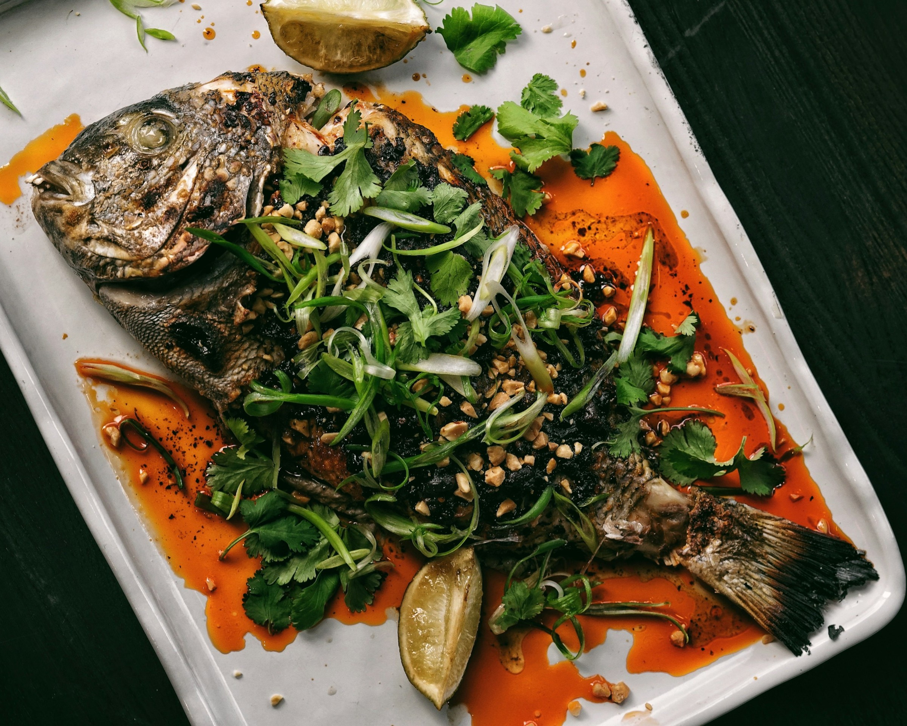
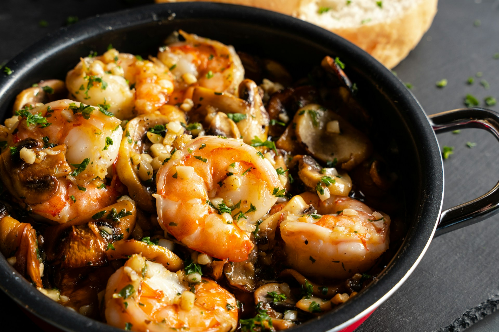
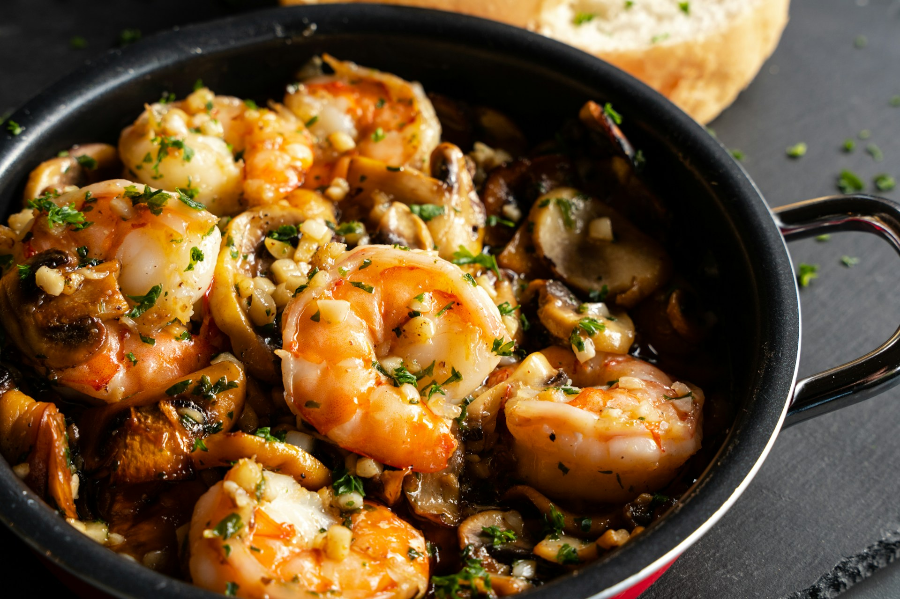

Island Cuisine
Hungry for adventure? Taniti's got you covered with local restaurants serving up island favorites and international dishes alike. Prefer to cook your own meal or plan a beach picnic? Swing by the grocery store or local market for fresh, flavorful finds!
 

 
